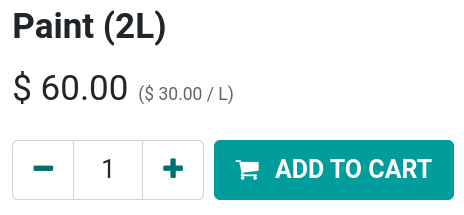
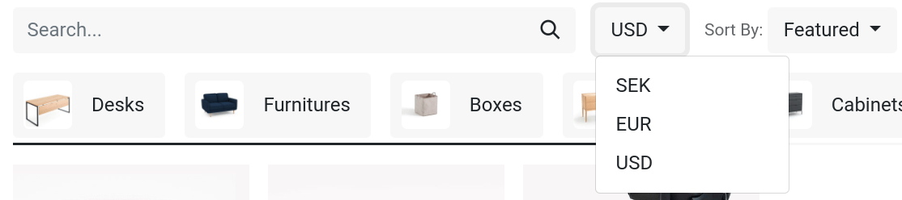

Gestión de precios¶
Odoo ofrece varias opciones para seleccionar el precio que se muestra en su sitio web, así como precios específicos por condiciones con base en criterios establecidos.
Impuestos¶
Configuración de impuestos¶
Si desea agregar un impuesto a un producto, establézcalo en el campo impuestos de cliente de la plantilla de producto o utilice las posiciones fiscales.
Visualización de impuestos¶
Elegir qué impuesto de precio se muestra normalmente depende de las regulaciones del país o del tipo de clientes (B2B o B2C)*. Para seleccionar que tipo de precio se muestra, vaya a , baje a la categoría Tienda - Productos y seleccione impuestos no incluidos o impuestos incluidos.
Impuestos no incluidos: el precio que se muestra en el sitio web no incluye impuestos y el impuesto se calcula en el paso de la revisión del carrito.
Impuestos incluidos: el precio que se muestra en el sitio web incluye impuestos.
Nota
Este ajuste es global y el tipo de visualización de impuestos es el mismo para todos sus sitios web. Por lo tanto, no es posible seleccionar visualizaciones de impuestos distintas en sitios web diferentes. Esto puede ser un punto importante a considerar en la implementación de una base de datos con múltiples sitios web de comercio electrónico que tienen como objetivo distintos tipos de clientes (es decir, B2B y B2C).
Puede elegir mostrar el tipo de precio junto al precio del producto en , seleccione un producto y vaya a y habilite indicación de impuestos.

Precio por unidad¶
Si desea mostrar el precio por unidad en la página del producto, vaya a y habilite la opción precio de referencia de producto en la sección tienda - productos. Cuando se habilita, asegúrese de que haya un importe establecido en el campo número de unidades de base de la plantilla de producto y en el precio de venta.

Puede encontrar el precio por unidad de medida encima del botón agregar al carrito en la página de producto.
Nota
Tome en cuenta que mostrar el precio por unidad puede ser obligatorio en algunos países.
Ver también
Configuración de precios: listas de precios¶
Las listas de precios son la herramienta principal para gestionar los precios de su comercio electrónico. Le permiten definir precios específicos al sitio web que sean distintos de los indicados en la plantilla de producto. Estos precios se pueden basar en el grupo del país, la divisa, la cantidad mínima, el periodo o la variante. Puede crear tantas listas de precios como necesite, pero es obligatorio configurar por lo menos una lista de precios por sitio web. Si no se agregan listas de precios personalizadas, Odoo utiliza la lista de precios pública predeterminada para todos los sitios web.
Ver también
Configuración¶
Puede encontrar las listas de precios en , pero primero debe activar esta función. Para hacerlo, vaya a y baje a la sección Tienda - Productos. Ahí tendrá dos opciones:
Múltiples precios por producto;
Reglas de precios avanzadas (descuentos, fórmulas).
La primera opción le permite establecer distintos precios por segmento de cliente, es decir, clientes registrados, clientes gold, clientes regulares, etc. La segunda opción le permite establecer regls de cambio de precio, como descuentos, márgenes, redondeos, etc.
Divisa extranjera¶
Si vende en múltiples divisas y tiene listas de precios con divisas extranjeras, los clientes pueden seleccionar la lista de precios correspondiente en cualquier lugar de la página de tienda con el menú desplegable junto a la barra de búsqueda.
Descuento permanente¶
Si redujo el precio de un producto de forma permanente, una manera popular para atraer clientes es la estrategia de tachado. La estrategia consiste en mostrar el precio anterior tachado y el nuevo precio con descuento al lado.

Para mostrar un precio «tachado» primero debe habilitar la opción precio de comparación en . Luego, vaya a la plantilla del producto (en ) y en el campo comparar al precio introduzca el nuevo precio.